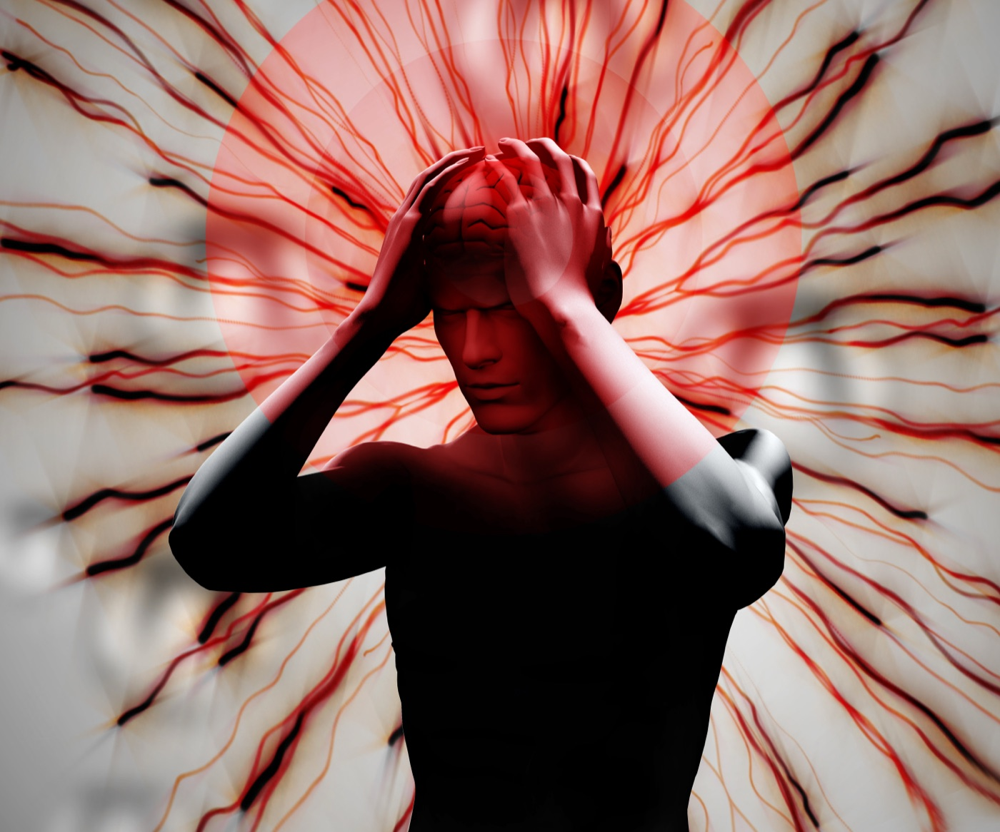

Аутоиммунные энцефалиты (АЭ) — гетерогенная группа иммуноопосредованных заболеваний ЦНС, обусловленных выработкой аутоантител к нейрональным поверхностным или синаптическим антигенам. В большинстве случаев при ранней диагностике энцефалиты аутоиммунной этиологии хорошо поддаются терапии. Однако нередко они ошибочно принимаются за первичную психотическую патологию с задержкой начала иммунотерапии. Также фиксируют нарастание частоты гипердиагностики АЭ.
К наиболее изученным формам АЭ относят анти-NMDA-рецепторный, анти-LGI1, анти-CASPR2, анти-AMPA-рецепторный и анти-ГАМК-B-рецепторный энцефалиты. Заболевание может быть паранеопластическим (ассоциированным с тератомой яичника, тимомой, мелкоклеточным раком лёгкого), постинфекционным — в том числе после герпетического энцефалита, — ятрогенным или идиопатическим.
Клинический спектр широк: от изолированных психотических эпизодов до тяжёлого полисимптомного поражения с кататонией, эпилептическим статусом и угнетением сознания.
| Антитела | Типичный пациент | Ключевые признаки |
|---|---|---|
| Анти-NMDAR | Молодые женщины, дети | Психоз, дискинезии, судороги, вегетативная нестабильность, гиповентиляция |
| Анти-LGI1 | Мужчины старше 50 лет | Фациобрахиальные дистонические приступы, гипонатриемия, нарушения памяти |
| Анти-CASPR2 | Мужчины старше 50 лет | Нейромиотония, нейропатическая боль, инсомния, синдром Морвана |
| Анти-ГАМК-B | Старший возраст | Ранние тяжёлые судороги; часто мелкоклеточный рак лёгкого |
Если у молодой пациентки с «первым психотическим эпизодом» на фоне нейролептиков появились дискинезии и колебания давления — это анти-NMDAR энцефалит, пока не доказано обратное.
МРТ головного мозга с контрастированием: Т2/FLAIR-гиперинтенсивность медиальных височных долей характерна для лимбического энцефалита, но при анти-NMDAR энцефалите МРТ нормальна у большинства пациентов.
ЭЭГ: замедление, эпилептиформная активность; паттерн extreme delta brush специфичен для анти-NMDAR энцефалита.
Ликвор: лимфоцитарный плеоцитоз, олигоклональные полосы. Антитела — в сыворотке и ликворе. Обязателен онкопоиск: УЗИ / МРТ органов малого таза, КТ грудной клетки.
Терапию первой линии — пульс-терапию метилпреднизолоном, внутривенный иммуноглобулин или плазмаферез — начинают при «возможном» АЭ, не дожидаясь результатов анализа на антитела. При недостаточном ответе через 2–4 недели переходят ко второй линии: ритуксимаб или циклофосфамид. При паранеопластическом процессе ключевое значение имеет удаление опухоли.
Ложноположительный результат на антитела в сыворотке при низком титре и атипичной клинике — частая причина ошибочного диагноза. Решение принимают по совокупности клиники, ликвора, ЭЭГ и МРТ, а не по единичному анализу.